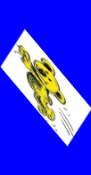
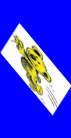
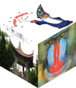
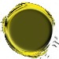
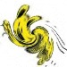

ImageMagick Examples --
 Warping Images
Warping Images
- Index
-
 ImageMagick Examples Preface and Index
ImageMagick Examples Preface and Index
-
 Simple Image Warping (rearrange pixel order)
Simple Image Warping (rearrange pixel order)
-
Rotate and Shearing
- Rotating Images (Simple Image Rotations)
- Shearing Images (Linear Displacement)
- Waving Images (Sine Wave Displacement)
-
Circular Warping
-
Animations (fun examples)
Simple Image Warping
Simple Image Warping Operators just rearrange the pixels in the image. The number of pixels and even the size of the image remains the same. The key feature is that the image does not loose any information, it is just rearranged, and could very easilly be returned to normal without any loss of quality (excluding JPEG-like lossy-compression on save). Basically it just rearranges the pixels, without destroying, overwriting, copying, or color merging or otherwise modifying the contents of the original image. Just moving the pixel postions withing in the image.![[IM Output]](../images/koala.gif)
Flipping, and Mirroring
For these examples lets use this cute looking koala image...
The simplest image distortion is to rearrange the pixels in the image so as to "-flip" it upside-down.
|
![[IM Output]](flip.gif)
|
Or by using "-flop" you can generate a mirror image.
|
![[IM Output]](flop.gif)
|
Before IM v6.6.6-5 both the "-flip" and the "-flop" operators did not modify the virtual canvas offset of the image, relative to a larger virtual canvas that may have been present |
Transpose and Transverse, Diagonally
The "-transpose" and "-transverse" image operations produce diagonal mirrors of the image.
The "-transpose" mirrors the image along the image top-left to bottom-right diagonal.
|
{kind=link}
While "-transverse" mirrors the image along the image bottom-left to top-right diagonal.
|
{kind=link}
Before IM v6.6.6-5 both the "-transpose" and the "-transverse" operators did not modify the virtual canvas offset of the image, relative to a larger virtual canvas that may have been present |
Rectangular Rotates
All four types of operations shown above, will essentially produce a mirror image of the original. The "-rotate" operator provides the other non-mirrored versions of the image, including the original image itself.
magick koala.gif -rotate 0 rotate_0.gif magick koala.gif -rotate 90 rotate_90.gif magick koala.gif -rotate 180 rotate_180.gif magick koala.gif -rotate -90 rotate-90.gif magick koala.gif -rotate 360 rotate_360.gif |
![[IM Output]](rotate_0.gif)
![[IM Output]](rotate_90.gif)
![[IM Output]](rotate_180.gif)
![[IM Output]](rotate-90.gif)
![[IM Output]](rotate_360.gif)
-rotate" is a simple distort only if you use a rotation angle of a multiple of 90 degrees. Any other angle will introduce other more complex pixel level distortions into the image. See Rotate below.
| You may notice that a positive angle of rotation is clock-wise, which seems to be logically incorrect. Internally however, it is mathematically correct and is caused by use an of negated Y-axis. That is, the Y-axis goes from 0 at the top and positive downward. Because of this the coordinate system in reversed, and thus the angle of rotation is also reversed mathematically. |
Digital photos can also be rotated to match the recorded Camera Orientation by using the "-auto-orient" operator. This was added in IM v6.2.7-8. |
Rolling Images like a bad TV
You can also "-roll" an image horizontally (like a TV that is out of sync). The amount of the roll (displacement of the image) is given in pixels.
|
{kind=link}
Of course you can also roll the image sideways...
|
![[IM Output]](roll_vert.gif)
|
Or by using a negative number of pixels, you can roll it in the opposite direction.
|
{kind=link}
-tile-offset" setting defines, how much roll to apply to a tiling image as it is read in by the "-tile" option.
Simple Image Warping Summary
The most important aspect of all these operators is that you can add them all together in many different ways such that the result will be exactly as if no operation was performed at all.
|
![[IM Output]](original.gif)
|
Rotating and Shearing
While the Simple Distortion Operators (above) preserve the images size and color, the next set does not. The results of these operators do not fit in the original size, or even the original raster grid of the image.Rotating Images -- Simple Image Rotation
As you saw above the "-rotate" operator can perform simple, image preserving distorts, when you rotate image in units of 90 degrees.
With other angles however, the rotated image will not fit nicely into a rectangular image. Consequently to ensure that no image data is lost, the size of the final image is enlarged just enough to accommodate the rotated image.
|
![[IM Output]](rotate.jpg)
|
The extra space added by ImageMagick is colored with the current "-background" color setting. Allowing you to specify the color to fill into the corners.
|
![[IM Output]](rotate_color.png)
|
Of course if you want to fill with the transparent color, you will need to ensure the image can handle transparency (by enabling adding an Alpha Channel), and is saved to an image format that can handle transparency.
|
{kind=link}
Before version 6.1.2, "-rotate" did not handle transparency correctly, producing stripes of black and transparent in the corners of the rotated image. The workaround for this problem was rather complex, involving rotating the alpha channel separately to the colors. |
-crop" to return the image to its original size. If you don't know what the original size was, you can use an alpha composition trick (see the 'Src' compose method) to restore the image back to its original size.
|
![[IM Output]](rotate_resized.png)
|
-rotate" operator also understands two extra flags. If a '>' symbol is added to the rotate argument (before or after the number), then the image will only be rotated if the image is wider than it is taller. That is a '90>' will only rotate 'landscape' (wide) style images into 'portrait' (tall) style images, so that all th images are 'portrait' style. The other flag '<' does the opposite, only rotate images that are taller than it is wide. For example '90<' will make sure all images are 'landscape'. Another use of this flag is to rotate 'portrait' and 'landscape' images by different amounts. That is, you can just give two different "-rotate" operations such that you angle 'portrait' one direction, and angle 'landscape' another direction. Digital photos can also be rotated to match the Camera Orientation (based on the images EXIF meta-data) by using the "-auto-orient" operator. However remember saving back to JPEG format may not be a good idea.
Rotate Operator Internals
As of IMv7.7.3-4 the Rotate Operator is now using Distort Operator and Scale-Rotate-Translate (SRT) Distortion.
Here is the more direct rotation using the underlying SRT Distortion.
|
{kind=link}
Or using the '+' version of the distort operator to adjust the cavas size.
|
{kind=link}
Shearing Images -- Linear displacement
The "-shear" operator takes each row (or column) of pixels and slides them along so that each row (or column) is displaced by the same amount relative to the neighbouring row (or column). Its two arguments are given in terms of angles. Just as with "-rotate" the operation increases the size of the resulting image so as not to loose any information. However shear is more complex in that it is really a double operation.
magick koala.gif -background Blue -shear 20 shear_rot.gif magick koala.gif -background Blue -shear 20x0 shear_x.gif magick koala.gif -background Blue -shear 0x50 shear_y.gif magick koala.gif -background Blue -shear 20x50 shear_xy.gif magick koala.gif -background Blue -shear 20x0 -shear 0x50 shear_xy2.gif magick koala.gif -background Blue -shear 0x50 -shear 20x0 shear_yx.gif |
{kind=link}
![[IM Output]](shear_x.gif)
![[IM Output]](shear_y.gif) 
 {kind=link}
{kind=link}
![[IM Output]](shear_yx.gif)
-shear" (fourth image) is actually equivelent to the doing the the X shear first, followed by the Y shear (with an appropriate image trimming), as showin in the fifth or second last image). Note that the ordering of the shears produce different results. If only one number is provided (without any 'x' in the argument, as in the first image) then "-shear" will apply it in both the X and Y directions as a sort of poor mans rotate.
The "-background" color setting is of course used as the color for the extra space added.
|
{kind=link}
Before IM version 6.1.2 "-shear" did not handle transparency. The workaround for for this problem was rather complex, involving shearing the alpha channel separately to the colors. |
-shear" in this way is not a correct method for rotating an image. To actually use shear to rotate an image properly, you would need to perform multiple shearing operations in the form of "-shear {X}x{Y} -shear {X}x0 -crop ... ", however working out the proper values for the '{X}', '{Y}' and final trim requires some trigonometry. The "Rotate Operator" actually used to be implemented in this way, and the API function to do this is still available, but no longer from the command line.
| Note that shearing in the X direction will not affect an images height, while shearing the the Y direction will not effect the images width. The result is that the area covered by some object within the image will not change (only the surrounding container holding the image). |
| The Shear Operator is implemented as a direct 'warping' (distorting pixels in individual rows and columns only) of the source image. As a consequence it does not use the Interpolation Setting or the the Virtual Pixel Setting. As a result the areas added to the image is only filled by the current " -background" color, and there is no method provided to preserve the original colors of the image. |
Isometric Cube using Shears
While shears aren't the nicest or simplist of operators to use, that does not mean you can't do fancy things with them. The following is an example of using "-shear" to create a isometric cube.
|
 |
{kind=link}
Waving Images - Sine Wave Displacement
The "-wave" operator is like "-shear" in that it adds a 'linear displacement' to images. However this operator will only displace columns of pixels vertically according to a sine wave function. There are two arguments to the "-wave" operator. The first is the maximum height or amplitude the pixels will be displace either up or down, while the second is the wavelength of the sine function in pixels.
|
{kind=link}
Note that because pixels can be displaced up to the given amplitude, that much extra space will always be added to both the top and bottom of the image, even if that space is not actually needed. For example by adjusting the arguments so that the wavelength is double the width of the image, you can make the image into an arc.
|
![[IM Output]](arched.jpg)
|
In this sort of case the unused space can be removed using either a "-chop", "-shave", or possibly even a "-trim" operation. Lets clean up the previous example by using a negative amplitude to flip the arc over, and use "-chop" to remove the unused space the "-wave" operator added.
|
![[IM Output]](arched_2.jpg)
|
Of course the "-background" color setting can be used to define the extra space added to the image.
|
{kind=link}
As you can see from the above examples "-wave" only applies in the vertical or 'Y' direction. If you want to add a wave in the X direction, you'll need to rotate the image before and after you apply the wave.
|
![[IM Output]](wave_y.jpg)
|
-wave", is that the wave only starts at zero. That is the left most column is not displaced, while the next few rows are displaced downward (positive X direction), unless you give a negative amplitude for an initial vertical offset.
Basically the "-wave" operator does not (at this time) allow you to specify an offset for the start of the sine function. This can be rectified however by adding, then removing, an image offset using "-splice".
|
![[IM Output]](wave_offset.jpg)
|
-wave" will not make use of the current Virtual Pixel Setting to define the color of the added areas, it will look at the current Interpolation Setting to map the colors from the source to the image generated. This means wave will tend to blur pixels slightly in vertical bands across the image.
Circular Distortions
So far the image distortions have been rather mild, with very little stretching, expanding or compressing of the image data. That is, the data remains pretty well unchanged. These next few image operators can result in an image that is so distorted, the original image can not be determined. The colors are twisted into a blurry mess. It also happens that they limit the distorting effects to a circular area with little to no distortion of the original image at the edge of the image rectangle. That means, you can use these operators on a smaller area using the Region Operator, and the result will still blend into the original image without it looking like it was: cut out, warped and pasted back into place. That is, they the operators are known as a 'local' distortion, as they could be used to warp smaller areas of an image.Imploding Images
The "-implode" operator warps the image so as to pull all the pixels toward the center. Its sort of like sticking a vacuum, or 'black hole' in the center of the image and sucking the pixels toward it. Caution however is advised to only use very small values, to start with, and slowly increase those values until you get the desired result. Most novice users tend to use too large a value and get disappointed by the result. For example this is a typical image implosion...
|
{kind=link}
Using increasingly larger values will essentially suck all the pixels in the circle, into oblivion.
|
![[IM Output]](implode_big.gif)
|
-implode" value larger than '1.0' is also effected by the Virtual Pixel Setting, as the algorithm starts to make color references beyond the boundaries of actual image itself. As the default the "-virtual-pixel" setting is 'edge', the edge color or surrounding frame on an image can have a major effect on the result. For example these two images are the same except one had white border added to it. this basically shows the area which is using colors looked up from beyond the bounds of the image proper. The area normally defined by the "-virtual-pixel" setting.
|
|
Background' will produce the same effect as adding "-border", but without enlarging the image. Other Virtual Pixel settings can produce much more interesting effects in the central imploded region. For example using a 'Tile' setting can add highly distorted copies of the image. For example, here I implode simple box image using this setting...
|
![[IM Output]](implode_tiled_box.gif)
|
-virtual-pixel" effects are explored on Implosion Effects of Virtual Pixels. As the number of pixels being imploded into a small area increases, and the size of the implosion parameter gets very large, the results start to get a 'pixelated' look. To get a better more consistent result, you can increase the number of pixels implode works with, using a technique called Super-Sampling. Basically by using a larger image (enlarging the source image if necessary), doing the distortion, then shrinking the result to its final size you will produce a much better result.
|
![[IM Output]](implode_tiled_ss.gif)
|
By using a larger "-border" around the image being imploded, and later removing it again, you can also warp the edges of an image, inward toward the center.
|
{kind=link}
As of IM version 6.2.1 you can also use a transparent border, or image with transparency...
|
![[IM Output]](implode_border_trans.png)
|
Exploding Images
By using a negative value with the "-implode" operator, you can explode the image. This is however more like magnifying the center of the image pushing all the mid-radius pixels out toward the edge, rather than a true explosion.
|
{kind=link}
Using larger value will essentially enlarge the center most pixels of the image into a circle two-thirds the size of the smallest image dimension.
|
 |
{kind=link}
|
![[IM Output]](explode_big_ss.jpg)
|
Swirling Image Whirlpools
The "-swirl" operator acts like a cake mixer. It will warp the image around in a circle the number of degrees you give it as an argument.
|
 |
{kind=link}
By adding a border, and combining with "-implode" you can give the look of a whirlpool sucking the image up to oblivion.
|
![[IM Output]](whirlpool.jpg)
|
Animations (fun examples)
To finish off with lets generate some GIF animations of some of these distorts. For these I generated some simple shells scripts to generate the animated image, which you can also download and play with, using your own test images. This brings me to an important point. If generating a series of images using these distorts, it is better to always distort from the original starting image, rather than incrementally distort the image over-n-over. This is especially true of rotated images where there is some blurring of the result, though minimal in any individual operation, If you do it over an over however, this is the results. All the scripts use a 'Generated "magick" Command' technique, to create the animation. That is, a shell script creates a long single command, which is then executed. This avoids the need to generate temporary files, though can be difficult to debug. Another alernative is to use a method known as a MIFF Image Streaming, which generates an individual images in a loop, and 'pipes' it into a final 'merging' command. This is demonstrated more clearly in the examples Programmed Positioning of Layered Images and Pins in a Map.
![[IM Output]](animated_mixer.gif)
|
The shell script "animate_mixer" each frame is generated by using "-swirl" on the original image. The swirl is animated in one direction, then back again to form a continuous cycle. This is actually a very typical example warping animation in IM. A variation of this is to have the animation un-warp into a different but similar image.
|
The shell script "animate_whirlpool", not only uses "-swirl" on each image frame, but also uses "-implode" with an increasing argument size, as well. I used a 'lightblue' border color for the added space used to show that the whole image will be 'sucked down the drain', though I should have used the same white background color instead, for a better, more realistic effect.
|
{kind=link}
![[IM Output]](animated_explode.gif)
|
An explosion in the middle of the image (see script "animate_explode". The image is again enlarged so the whole image is exploded, and a colored dot is drawn at the center to define the final color.
|
![[IM Output]](animated_flex.gif)
|
Using the shell script "animate_flex" the center of the image is flexed up and down by changing the amplitude of the "-wave" function both positive and negative.
|
![[IM Output]](animated_flag.gif)
|
Using the shell script "animate_flag" I create a 'offset wave' animation to make the image wave like a flag. The animation can be improved by also vertically offsetting each frame of the image so the left hand edge remains constant, and maybe adding a flag pole. However that requires you to mathematically determine that offset, which can be tricky.
|
The script "animate_rotate" generated this rotating animation, but crops each frame with the original image as described above to preserve the original image size.
|
{kind=link}
As a comparison here is a koala rotation generated using the default settings and the "-distort SRT {angle}" command. The script use to generate it is "animate_distort_rot". Note how much sharper the image is using this method of rotation, and the lack of rotational 'jitter' that is evident in the previous version.
|
{kind=link}
Bonus Animations and Movies
![[IM Output]](../images/swirl_video.gif) As a bonus Florent Monnier from France created a neat video using the "
As a bonus Florent Monnier from France created a neat video using the "-swirl" distortion operator, made using an IM OCaml API script. Select the GIF animation to the right to download the full version of the video. Can you make a good video demonstrating a distortion map technique? Do you know of one elsewhere on the net? Mail me.